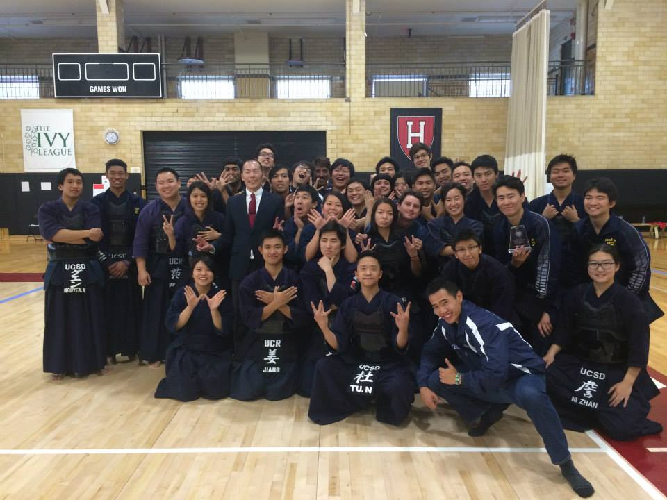
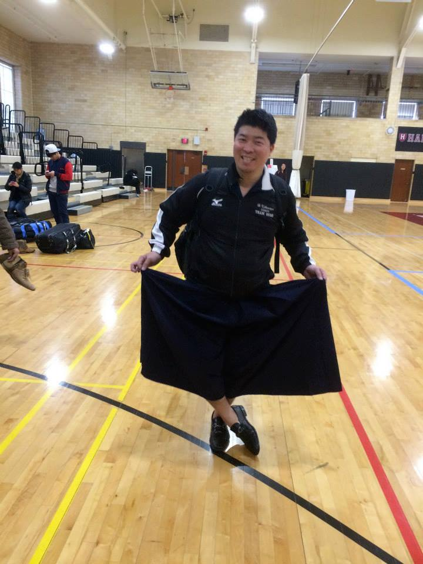

- 

- 
[Under Construction]
Our club seeks to promote awareness and appreciation of the Japanese martial art, kendo (剣道). We practice every Saturday from 2:15 PM to 4:00 PM in the Rec Gym, followed by a club meeting. In addition, many of our members are also enrolled in the Kendo Recreation Class.
The Kendo Club at UCSD was founded in 1998 and remains active to this day. Our alumni have gone on to compete at the national and international level.
The Kendo Recreation Class is offered through the UCSD Recreation Department. The class meets on Saturdays from 12:00 PM to 1:55 PM in the Rec Gym, and is taught by John Yamamoto-sensei of the San Diego Kendo Bu. It’s a great way for beginners to learn kendo from an experienced individual in a welcoming environment!